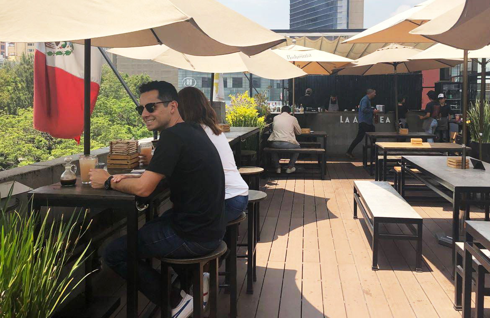

Hola,
I'm Serguei, human, designer and solver.
I explore ideas, designs solutions, and write code with people's needs in mind.

2014—Present
I'm currently working as a designer at Oracle.
I lead a team of designers to explore, solve, and improve the new generation of Oracle products with the integration of Artificial Intelligence.
2015—Present
I love to do side projects.
I is continuously creating and collaborating to explore, test, validate, and share knowledge.
2010—2014
I have experience working in agencies and as a freelance.
Experienced in different ways of planning, working, collaborating and solving problems.
I also do other things.
I'm always looking forward to personal and professional growth.